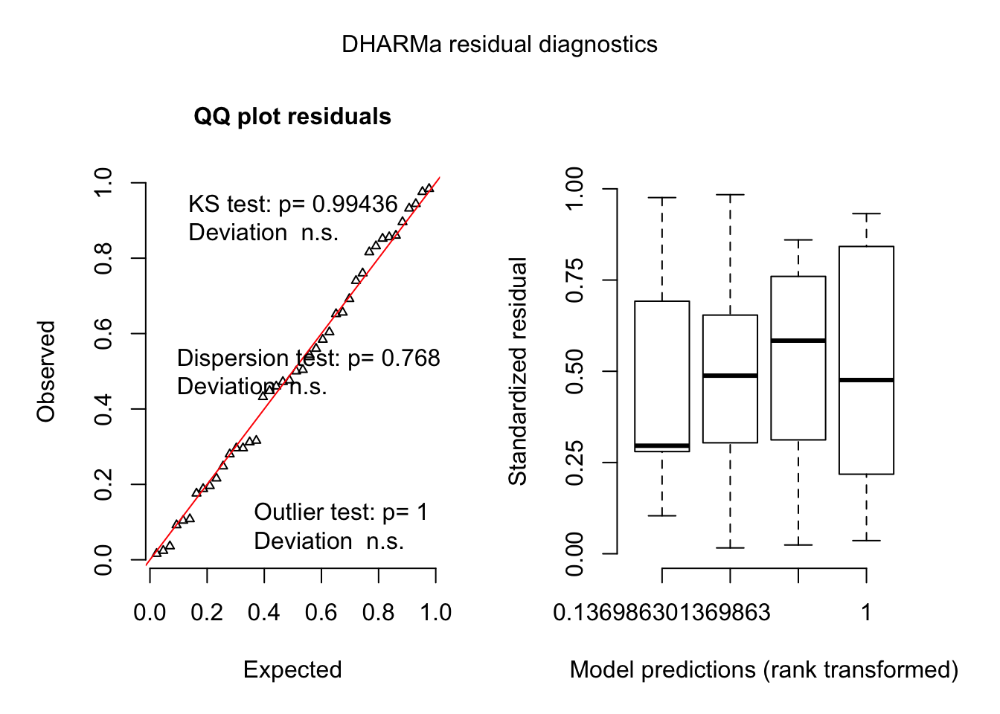
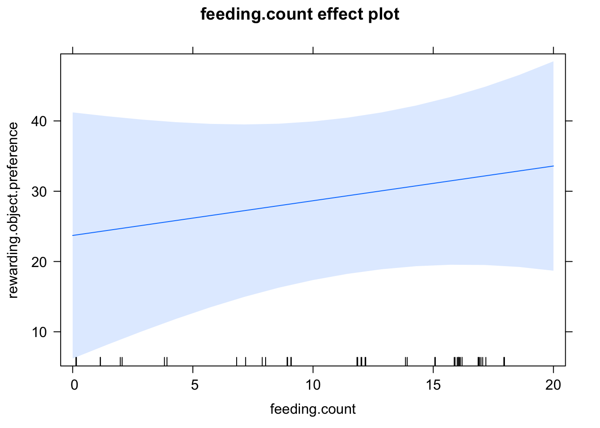

ESM Model 2 - Controlling for feeding count
Variables
rewarding.object.preferenceis the time (seconds) spent near the rewarding object subtracted by the time spent near the unrewarding objectrewarding.object.colouris the identity of the rewarding object (blue or green)trialis the number of the training trial. In this model it is supplied as an integeridis the identity of the individual fishfeeding.countis the number of trials in which an individual fish ate
ESM Model 2a - Removing individual that did not feed
There is a fish that did not eat during any trials, however removing this individual does not change the conclusions
Model
test.feeding.data.low.feeders.removed = test.feeding.data %>% filter(feeding.count > 0)
test.feeding.data.low.feeders.removed.model =
glmmTMB(rewarding.object.preference ~ trial * rewarding.object.colour + (1|id) +
diag(0 + rewarding.object.colour:trial |id),
data = test.feeding.data.low.feeders.removed, family = gaussian)Results
| term | estimate | std.error | statistic | p.value |
|---|---|---|---|---|
| trial21 | 24.090287 | 9.694064 | 2.4850556 | 0.013 |
| rewarding.object.colourgreen | 3.041878 | 5.538292 | 0.5492448 | 0.583 |
| trial21:rewarding.object.colourgreen | 58.957599 | 20.678839 | 2.8511079 | 0.004 |
Model Residuals

ESM Model 2b - Including feeding counut as a covariate
Moreover, as I demonstrate in the next model including the amount of trials fed as a covariate in the model does not change the conclusions.
test.data.feeding.controlled.model =
glmmTMB(rewarding.object.preference ~ trial * rewarding.object.colour + feeding.count + (1|id) +
diag(0 + rewarding.object.colour*trial |id),
data = test.feeding.data, family = gaussian)Results
| term | estimate | std.error | statistic | p.value |
|---|---|---|---|---|
| trial21 | 17.6968896 | 9.5533254 | 1.8524324 | 0.064 |
| rewarding.object.colourgreen | 1.2413021 | 5.5140983 | 0.2251142 | 0.822 |
| feeding.count | 0.4940784 | 0.5786047 | 0.8539136 | 0.393 |
| trial21:rewarding.object.colourgreen | 65.3519392 | 19.8470755 | 3.2927743 | < .001 |
The main results do not change if I control for feeding count. The above table is the output feeding controlled model. Below we have the output table for the non-feeding-count controlled model from model 3.
| term | estimate | std.error | statistic | p.value |
|---|---|---|---|---|
| trial21 | 17.697362 | 10.016982 | 1.766736 | 0.0772725 |
| rewarding.object.colourgreen | 1.644944 | 5.542077 | 0.296810 | 0.7666115 |
| trial21:rewarding.object.colourgreen | 65.350592 | 20.832230 | 3.136995 | 0.0017069 |
In both models the p-values are similar. While the effect of feeding count is not significant (p = 0.393) the effect of feeding count trends in the expected direction in our feeding count controlled model. In the effect plot below to the left we see that as feeding count increases the preference for the rewarding object colour also increases.

Model Residuals
